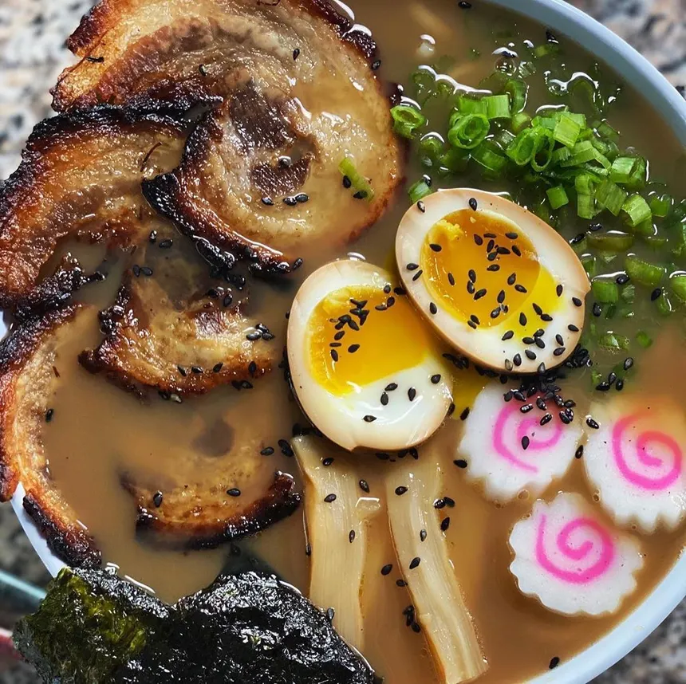

Ichiraku Ramen Recipe
HOME

Description of the recipe
Ingredients for Miso Ramen:
Broth + Noodles:
- 1-2 pounds pork bones
- 4 liters of water
- 1 inch of fresh ginger
- 1 3inch strip of kombu
- 2 1/2 Tbsp sake
- 1 1/2 Tbsp soy sauce
- 1/2 Tsp sugar
- 8 Tbsp miso
- Fresh ramen noodles, or fresh Chinese egg noodles.
Chasu Pork:
- 1 Pound slab pork belly (not cut into strips, like bacon)
- Salt
- 1 inch fresh ginger
- 2/3 cup water
- 1/3 cup sake
- 1/3 cup soy sauce
- 3 Tbsp sugar
Soft Boiled Ramen Eggs:
- 6 eggs (count on 1 egg per bowl- cook eggs accordingly!)
- 1/3 cup soy sauce
- 1/3 cup mirin
- 1 cup water
To Make Miso Ramen:
A note- get the broth started, and make the chasu and the eggs while you're waiting for the broth to fully cook.
You can make up the broth, pork, and eggs the night before, and then assemble on the day of.
- Start with the broth. Throw bones, ginger, and water into a stock pot. Begin to boil. As it boils, strain off any scum that floats to the top. Reduce to a simmer, and let simmer about 6 hours. Replace water as needed, so that it is always at the same level and bones are covered. When it is ready, strain the broth to remove the ginger, bones, and any debris in the broth.
- Throw kombu into the pot with the strained broth, and bring back up to a simmer. Let simmer about 15 minutes. Remove kombu, and add in sake, soy sauce, and sugar. Stir well, and then take a ladle full of broth, and mix it into the miso to thin it out. Add in parts, tasting as you go, until you're happy with the saltiness of your broth.
- Finally, add in the chili paste to the broth as desired. The purpose is to add a little complexity and give it a slight kick, but add at your own discretion. Set aside in the fridge overnight, or set aside while you prepare the rest of the ingredients.
- While the broth is cooking, soft boil the eggs. Bring a pan of water to a boil. Pierce the fat end of the eggs with a pin to allow the air bubble in the egg to be pushed out as the egg cooks. Add in the eggs to the boiling water, and let the water simmer for seven minutes (do not let it come back to a full boil!). I do this by dropping the eggs in and leaving them alone- the temperature of the eggs will reduce the heat of the water enough. But control your heating apparatus as you see fit. After seven minutes, remove from water and immediately deposit into an ice water bath.
- When eggs have cooled, gently (GENTLY) peel the eggs. The white will be delicate, so go slowly and carefully!
- Mix up the liquids in a bag or bowl, and pop the eggs inside. Allow to sit in the fridge for 1-2 hours at least, overnight for best effect.
- Let's work on the Chasu! Salt the entirety of your slab of pork belly. Roll up, and use a skewer or butcher's twine to secure the roll.
- Heat a neutral oil (like vegetable) over high heat in a pan. When hot, brown the pork roll, about 4-5 minutes each side, and 1-2 minutes on the edges of the roll. When ready, remove from pan, and wipe the pan out. Put in the liquids, the sugar, and the ginger, and place the pork back in the pan. Bring up to a simmer. Cover with a foil lid to promote even distribution of cooking.
- Flip once, halfway through cooking, which should take about 45 minutes to an hour. It is ready when the sauce is thickened and you can see the bottom of the pan when you push the pork around. When the sauce begins to bubble up, and the pork has a nice shiny coating, it's ready. Remove from pan, with sauce, and set aside or store in fridge until you are ready to use.
- Prepare toppings. Slice the green onions finely, slice the naruto, get out the menma (they usually come prepared in a jar or tin), slice eggs in half, and slice the pork so that you get thin slices of swirled pork.
- Put a pot of water on to boil. When boiling, place fresh ramen noodles into a strainer, and deposit into the water. Allow to cook about 90 seconds, or until noodles are bouncy. Immediately remove from the water with the strainer, and put in serving bowl.
- Ladle broth over the noodles, and then top with the toppings as you see fit! For the proper Naruto ramen, you need five slices of chasu, a handful of chopped green onions, some slices of naruto, menma, and one half of a soft boiled egg.
- And now it's done! Enjoy!